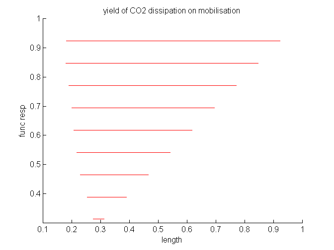

Contents
see Table 8.1 of DEB3 for par-setting
z = 1;
mu_E = 550;
M_V = 4;
F_m = 6.5;
kap_X = 0.8;
y_EX = kap_X;
p_Am = 22.5 * z;
J_EAm = p_Am/ mu_E;
v = 0.02;
kap = 0.8;
kap_R = 0.95;
p_M = 18;
J_EM = p_M/ mu_E;
p_T = 0;
J_ET = p_T/ mu_E;
k_J = 0.002;
E_G = 2800;
y_VE = 1/ (E_G/ M_V/ mu_E);
E_Hb = 275 * z^3;
M_Hb = E_Hb/ mu_E;
E_Hp = .3 * 166 * z^3;
M_Hp = E_Hp/ mu_E;
k_M = p_M/ E_G; k = k_J/ k_M;
E_m = p_Am/ v;
g = E_G/ kap/ E_m;
L_m = v/ k_M/ g;
L_T = p_T/ p_M;
U_Hb = 1E-6 * M_Hb/ J_EAm;
U_Hp = M_Hp/ J_EAm;
par = [kap; kap_R; g; k_J; k_M; L_T; v; U_Hb; U_Hp; y_VE];
shyield_CC(par)
Warning in get_ep_min: 2 solutions
